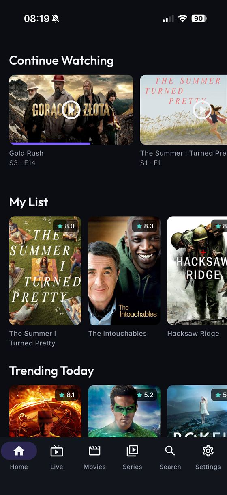
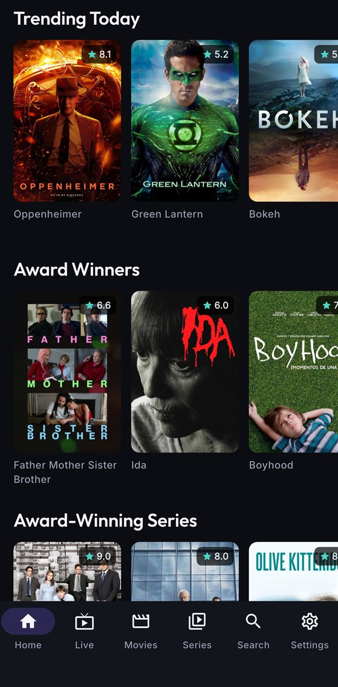
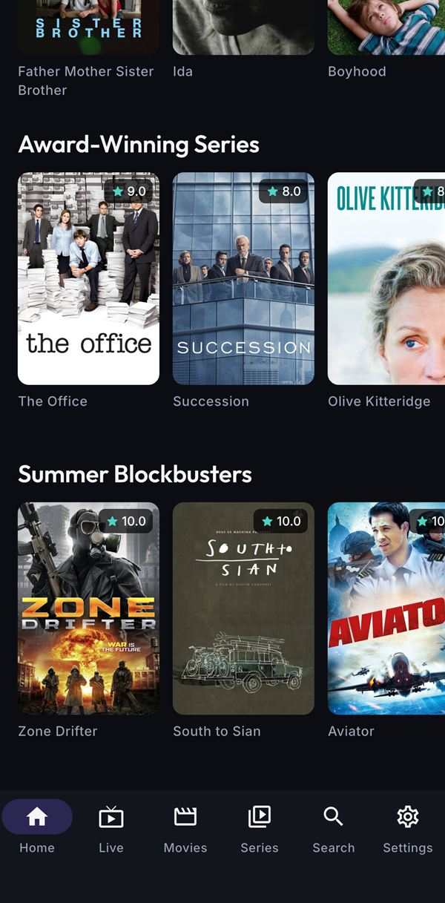
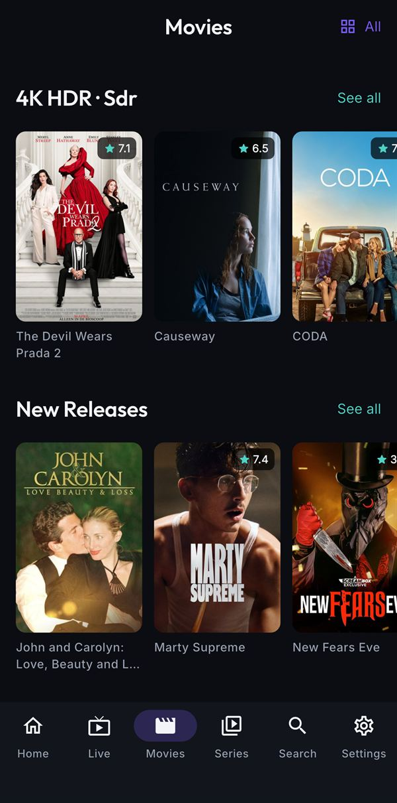

A personal project
Dawn Player points at the Xtream Codes or M3U line you already pay for and makes it worth opening. It remembers where you stopped, which languages you watch in, and what you meant to watch next — the three things every other player on that list gets wrong.
Continue watching · Living room
S3 · E14 — carried over from the phone

Why it exists
Dawn Player is not trying to have more features than the app it replaced. It is trying to have fewer, working. These three were the whole brief.
✕Before
A raw MPEG-TS channel or an HEVC film opens to a black screen, and the app dies instead of saying why. When the panel drops the connection, that's the end of the evening.
In Dawn Player
libmpv does the decoding, so MPEG-TS, HLS, HEVC and MKV all just open. When a stream does fail you get a plain error and a retry, and the player reconnects on its own.
Chosen for this, not for convenience — it is why Dawn Player isn't built on the platform players.
✕Before
Leave a film 40 minutes in, come back tomorrow, start from zero. Finish an episode and the whole series disappears from the row instead of moving on.
In Dawn Player
Your position is saved every few seconds and on every exit, so reopening puts you back within seconds of where you were — across restarts. Finish an episode and Continue Watching advances to the next one.
Turn sync on and the same positions show up on your other device.
✕Before
Every single episode: open the menus, find the English audio track, find the Dutch subtitles, pick both again. Twenty-two minutes of television, four taps of admin.
In Dawn Player
Set audio and subtitles once and every stream that has them picks them before the first frame. Change one by hand and Dawn Player takes that as the new preference.
Possible because libmpv reports each track's language tag — most players never see them.
The player
Everything you need is one tap deep and always in the same place. The two buttons in the top-right are audio and subtitles — the pair this app was built to get right.
Up next in 20…
S2 · E5 — Slack Water
What's in it
No recording, no profiles, no settings sprawl. Six things, done properly.
libmpv under the hood: raw MPEG-TS, HLS, HEVC and MKV open without ceremony.
Position saved every few seconds and on every exit. Finish an episode and the show advances to the next one instead of vanishing from the row.
Pick your audio and subtitle language once. Override one by hand and that becomes the new preference — no settings trip required.
Trending from Wikipedia, an award canon from Wikidata, rails that change with the season — none of it behind an API key. Missing posters filled in from TMDB.
Now and next on every channel, a day grid that stays bounded, channel up/down without leaving the stream, and catch-up where the provider offers it.
One Flutter codebase, an Android TV layer that takes a D-pad, remote control support, and progress that follows you between devices.
Series · 3 seasons · 2024
A harbour town closes ranks after a winter storm. Continue with S2 · E4 — 22 minutes left.
E4 — The Undertow
E5 — Slack Water
E6 — Ashfall
E7 — Vesper Bay
Films & series
The same line, sorted into something readable: rails with a reason to exist, series that know which episode you are on, and posters for the titles your provider never sent artwork for. A hundred thousand titles stays scrollable.
Where the rails come from
Every other player's recommendations sit behind a metadata company's goodwill — an API key, a rate limit, a price list. Dawn Player's three discovery sources need none of those, and two of them work with the network off.
Horror through October, Christmas Films in December, Summer Blockbusters from mid-June. Four seasons, deliberately few and absent for most of the year, so a seasonal rail still reads as an event rather than another category row. It needs no data beyond the date and your own catalogue.
Matched on genre and title both, because panels are inconsistent: Christmas films are almost never genre-tagged as such but nearly always say so in the title, and horror is the other way round.
Trending Today comes from Wikimedia's pageviews API — no key, no account, no commercial tier, openly licensed. It is read per language edition, so a Dutch device is told what the Netherlands is reading rather than what the United States is.
Better than a streaming chart, too: crossing what people are reading about with what your line actually carries leaves titles that are both current and watchable.
428 films and 82 series — Best Picture, the Palme d'Or, the Golden Lion, the Golden Bear, BAFTA Best Film — generated from Wikidata at build time and shipped inside the binary. Award Winners therefore makes no network call at all, and works offline.
Awards are resolved by name, not by Wikidata id: hardcoded ids were wrong seven times out of twelve, and one wrong id silently returned a different award's winners.
All three, on a real line, this week. Not mockups — screenshots from a phone, taken on 27 August, which is why the seasonal rail below says what it says.



TMDB is still in here — but only for pictures. It fills in posters and synopses your provider never sent. Nothing about what you get shown depends on it, which is the whole point: the day any of these APIs starts charging, the rails carry on working.
Live TV & the big screen
The same components, with focus turned up: a navigation rail instead of a tab bar, and a white ring wherever the D-pad is. Nothing was forked to get there.
One app, three screens
One Flutter codebase. The rails, the artwork and your resume points are identical — only the input changes: thumb, mouse, D-pad.
Recently added
Harbourline
22 min leftAshfall
1 h 14 min leftRecently added
Continue watching
S2 · E4 — The Undertow · 22 min left
ResumePhone: a six-tab bar, rails you flick through, and posters sized for a thumb.
How it works
Dawn Player has no account, no store page and nothing to buy. It needs one thing from you: the line you already have.
01
An Xtream Codes server URL with your username and password, or an M3U playlist plus an optional XMLTV guide URL. Dawn Player checks the credentials before it saves them, and the password goes to the device keychain — never into its database.
02
Films, series and channels are cached locally and indexed, then refreshed a category at a time as you browse rather than in one sweep. A line with a hundred thousand titles stays scrollable, and what you already loaded still opens with the network off.
03
Resume points, language choices and My List are yours from the first minute. Turn sync on and a second device picks up the same positions.
Pairing one is a code, not a re-typed password: Settings → Pair a device
Under the hood